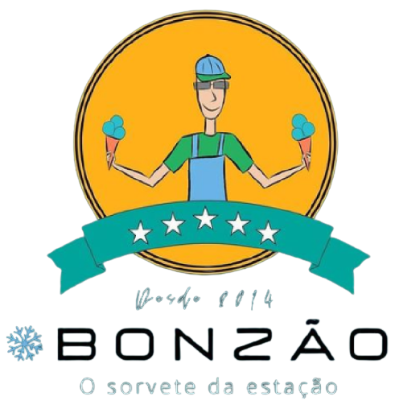

<mat-toolbar class="bg-blue-400 h-24 shadow-md justify-evenly" >
  <a routerLink = 'menu'>
    <button mat-button class="btn-menu">
      <mat-icon class="icons">
        home
      </mat-icon>
      MENU
    </button>
  </a>
  <a routerLink = '/produtos'>
    <button mat-button class="btn-menu">
      <mat-icon class="icons">
        list_alt
      </mat-icon>
      PRODUTOS
    </button>
  </a>
    
  <a routerLink = '/cadastre-se'>
    <button mat-button class="btn-menu">
      <mat-icon class="icons">perm_identity</mat-icon>
      CADASTRE-SE
    </button>
  </a>
  <a routerLink = '/redes-sociais'>
    <button mat-button class="btn-menu">
      <mat-icon class="icons">facebook</mat-icon>
      REDES SOCIAIS
    </button>
  </a>
</mat-toolbar>
<router-outlet></router-outlet>
